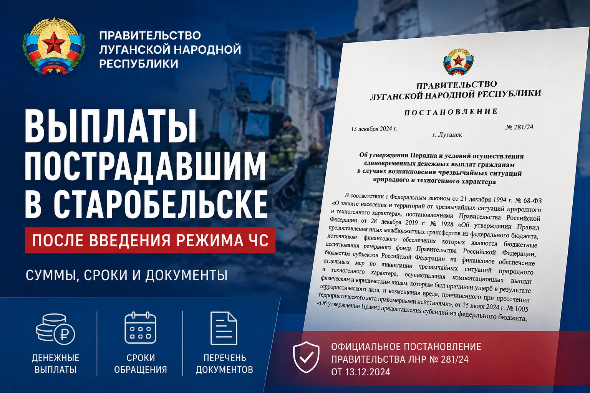

Выплаты пострадавшим в Старобельске после режима ЧС: суммы, сроки и документы
Дата:
Актуально на: 25.05.2026. Материал носит справочный характер. Окончательное решение по назначению выплат принимает уполномоченный орган социальной защиты после проверки документов и сведений.

Коротко: после трагических событий в Старобельске Глава ЛНР Леонид Пасечник сообщил о введении режима чрезвычайной ситуации регионального характера. Для граждан, пострадавших в результате ЧС, в ЛНР предусмотрены единовременная материальная помощь, финансовая помощь при утрате имущества первой необходимости, выплаты при вреде здоровью и пособие членам семей погибших.
Главное для пострадавших
- 15 000 рублей - единовременная материальная помощь на человека при нарушении условий жизнедеятельности.
- 75 000 рублей - при частичной утрате имущества первой необходимости.
- 150 000 рублей - при полной утрате имущества первой необходимости.
- 300 000 рублей - при легком вреде здоровью.
- 600 000 рублей - при тяжком вреде здоровью или вреде средней тяжести.
- 1 500 000 рублей - членам семьи погибшего, в равных долях на каждого погибшего.
Эта статья - практическая памятка: кто может обратиться, какие документы понадобятся, какие сроки нельзя пропустить и где может возникнуть риск отказа. Полное открытое досье KRM РФ по самому удару опубликовано отдельно: Старобельск, 22 мая 2026 года: удар Украины по колледжу и общежитию.
Что произошло юридически
Глава ЛНР Леонид Пасечник сообщил о решении ввести режим чрезвычайной ситуации регионального характера в связи с трагедией в Старобельске. Это важно не только как управленческое решение, но и как основание для запуска процедур помощи пострадавшим, формирования списков граждан и межведомственного взаимодействия.
Правительство ЛНР указало на действующие меры социальной поддержки граждан, пострадавших в результате чрезвычайных ситуаций. Базовый документ - Постановление Правительства ЛНР от 13.12.2024 № 281/24 "Об утверждении Порядка и условий осуществления единовременных денежных выплат гражданам в случаях возникновения чрезвычайных ситуаций природного и техногенного характера".
Важно понимать: сама публикация о выплатах не означает автоматическое перечисление денег всем пострадавшим. Для назначения выплат нужны заявление, документы, подтверждение обстоятельств и включение гражданина в установленную процедуру через уполномоченный орган.
Какие выплаты предусмотрены
1. Единовременная материальная помощь
Размер - 15 000 рублей на человека. Эта мера связана с нарушением условий жизнедеятельности гражданина в результате чрезвычайной ситуации.
Ключевые условия по постановлению: гражданин должен проживать в жилом помещении, которое попало в зону ЧС, на день введения режима ЧС; также должно быть установлено нарушение условий жизнедеятельности в результате воздействия поражающих факторов источника чрезвычайной ситуации.
2. Финансовая помощь при утрате имущества первой необходимости
Размер зависит от степени утраты имущества первой необходимости: 75 000 рублей на человека при частичной утрате и 150 000 рублей на человека при полной утрате.
Под имуществом первой необходимости понимается минимальный набор непродовольственных товаров общесемейного пользования, необходимых для сохранения здоровья человека и обеспечения его жизнедеятельности. Факты утраты устанавливаются не по словам заявителя, а через предусмотренную процедуру и работу комиссии.
3. Выплата при вреде здоровью
Для граждан, получивших вред здоровью в результате ЧС, предусмотрено единовременное пособие с учетом степени тяжести вреда. При легком вреде - 300 000 рублей. При тяжком вреде или вреде средней тяжести - 600 000 рублей.
Здесь главный документ - не просто медицинская справка, а документ, подтверждающий степень тяжести вреда здоровью, а также постановление следователя, дознавателя, судьи или определение суда, подтверждающее факт получения вреда здоровью в результате чрезвычайной ситуации.
4. Пособие членам семей погибших
Членам семей граждан, погибших или умерших в результате ЧС, предусмотрено 1 500 000 рублей на каждого погибшего. Сумма распределяется в равных долях между членами семьи.
К членам семьи относятся супруг или супруга, дети, родители, а также лица, находившиеся на иждивении погибшего. Для назначения выплаты нужно подтвердить родственную связь или факт иждивения, а также факт гибели в результате ЧС.
Кто может обратиться
По опубликованному порядку выплаты предназначены для граждан, пострадавших в результате чрезвычайных ситуаций на территории ЛНР. Обращение подается в ГКУ ЛНР "Республиканский центр социальной защиты населения" по месту проживания или пребывания. В официальном сообщении также указано, что сотрудники центра должны оказать консультацию и помощь в сборе документов для подачи заявления.
Заявление может подать сам гражданин. За несовершеннолетнего или недееспособного человека заявление подает законный представитель. Также заявление может подать представитель по нотариально удостоверенной доверенности.
По постановлению заявления также могут подаваться через МФЦ ЛНР и через Единый портал государственных и муниципальных услуг в электронной форме. На практике пострадавшим после конкретной ЧС лучше сначала уточнить маршрут подачи в РЦСЗН по месту проживания или пребывания, потому что порядок приема может быть организован с учетом оперативной ситуации.
Какие документы нужны
Для материальной и финансовой помощи
Для единовременной материальной помощи и финансовой помощи при утрате имущества первой необходимости базово нужны паспорт или иной документ, удостоверяющий личность, а также сведения о банковском счете, открытом в российской кредитной организации.
Если заявление подает представитель, понадобятся паспорт представителя и документы, подтверждающие его полномочия. Если заявление подается на ребенка, могут потребоваться документы о рождении ребенка и документы законного представителя.
Часть сведений РЦСЗН запрашивает по межведомственному взаимодействию: данные о документах личности, сведения ЗАГС, сведения о нахождении жилья в зоне ЧС, заключение комиссии о проживании, нарушении условий жизнедеятельности и утрате имущества первой необходимости. Но заявитель вправе представить эти сведения сам, если они уже есть на руках.
Для пособия членам семей погибших
Для выплаты членам семьи погибшего понадобятся паспорт заявителя, документы, подтверждающие родственную связь, документы о нахождении на иждивении при необходимости, постановление следователя, дознавателя, судьи или определение суда, подтверждающее факт гибели в результате ЧС, а также реквизиты счета в российском банке.
Если заявление подает представитель, дополнительно нужны паспорт представителя и документы, подтверждающие полномочия. Если документы о рождении, браке или иных актах гражданского состояния оформлены за пределами Российской Федерации, может потребоваться нотариально удостоверенный перевод на русский язык.
Для пособия при вреде здоровью
Для выплаты при вреде здоровью понадобятся паспорт пострадавшего, реквизиты счета в российском банке, постановление следователя, дознавателя, судьи или определение суда о признании гражданина пострадавшим и получившим вред здоровью в результате ЧС, а также документ, подтверждающий степень тяжести вреда здоровью.
Если заявление подает представитель, нужны паспорт представителя и документы, подтверждающие его полномочия. Для несовершеннолетнего заявление подает законный представитель.
Сроки и порядок рассмотрения
Для единовременной материальной помощи и финансовой помощи при утрате имущества первой необходимости заявление подается не позднее шести месяцев со дня введения режима ЧС.
Для единовременного пособия при вреде здоровью и пособия членам семей погибших заявление подается не позднее 12 месяцев со дня введения режима ЧС.
РЦСЗН принимает решение о назначении или отказе в течение 11 рабочих дней после получения необходимых документов и сведений. После принятия решения выплаты производятся в течение 15 дней со дня выделения средств.
Если принято решение об отказе, уведомление с указанием причин должно быть направлено гражданину в течение 10 рабочих дней со дня принятия такого решения. Несогласие с решением можно обжаловать в установленном законодательством Российской Федерации порядке.
Почему могут отказать
Главный риск - считать, что право на выплату возникает автоматически. На практике важны условия назначения, подтверждающие документы и сведения, а также выводы комиссии и уполномоченных органов.
По постановлению основаниями для отказа могут быть несоблюдение условий назначения, пропуск срока подачи заявления, отсутствие необходимых документов или сведений, недостоверные данные, а также назначение выплаты по аналогичному основанию ранее.
Для пострадавших в Старобельске особенно важны три блока: официальный статус пострадавшего, подтверждение факта вреда здоровью или гибели в результате ЧС, а также корректные банковские реквизиты российского банка. Для выплат, связанных с жильем и имуществом, дополнительно важны факт проживания или пребывания, зона ЧС и заключение комиссии.
Что делать сейчас
Практический порядок действий
- Обратиться в Республиканский центр социальной защиты населения по месту проживания или пребывания.
- Уточнить, какая именно выплата подходит к вашей ситуации: нарушение условий жизнедеятельности, утрата имущества, вред здоровью или гибель члена семьи.
- Собрать паспорт, банковские реквизиты российского счета и документы, подтверждающие статус заявителя.
- Если речь о вреде здоровью или гибели, запросить документы следственных органов или суда, а также медицинский документ о степени тяжести вреда.
- Если есть ущерб имуществу, не выбрасывать поврежденные вещи до фиксации, сохранить фото, видео, акты и любые документы, подтверждающие обстоятельства.
- При подаче заявления получить расписку или иной подтверждающий документ о принятии заявления.
- Сохранять копии всех документов и фиксировать дату обращения.
Не стоит откладывать обращение. Даже если часть документов еще не готова, первый контакт с РЦСЗН важен для понимания маршрута, сроков и перечня бумаг. Особенно это касается семей погибших, пострадавших с вредом здоровью, родителей несовершеннолетних и граждан, которые действуют через представителя.
Чем эти выплаты отличаются от компенсации за жилье
Выплаты по режиму ЧС и компенсации за поврежденное или утраченное жилье - не одно и то же. В этом материале речь идет о единовременных денежных выплатах гражданам в связи с ЧС: материальная помощь, имущество первой необходимости, вред здоровью, гибель.
Если поврежден дом, квартира или другое жилье, может потребоваться отдельная процедура фиксации ущерба, акт обследования и проверка документов на объект. Подробнее по этой теме: Компенсация за поврежденное или утраченное жилье в ЛНР.
Если проблема связана с правом собственности, ЕГРН, наследством, долями или старыми документами, см. отдельный материал: Регистрация недвижимости в ЛНР в 2026 году. Для жилья с признаками бесхозяйного имущества полезен разбор: Бесхозяйное жилье в ЛНР и дедлайн 1 июля 2026 года.
Источники: сообщение Главы ЛНР Леонида Пасечника в MAX о введении режима ЧС регионального характера; Постановление Правительства ЛНР от 13.12.2024 № 281/24; сообщение Правительства ЛНР о порядке обращения; справочная страница Республиканского центра социальной защиты населения.
Полный текст постановления: Постановление Правительства ЛНР № 281/24. РЦСЗН: Республиканский центр социальной защиты населения. Официальное сообщение Главы ЛНР: канал Леонида Пасечника в MAX. Канал Правительства ЛНР в MAX: Правительство ЛНР.
Материал KRM РФ не заменяет консультацию РЦСЗН, следственных органов, суда, медицинской организации или юриста. Для получения выплаты нужно обращаться в уполномоченный орган и подавать документы по конкретной ситуации. Информация может обновляться после новых официальных разъяснений.
См. также: методология KRM РФ, архив материалов, досье по удару в Старобельске.